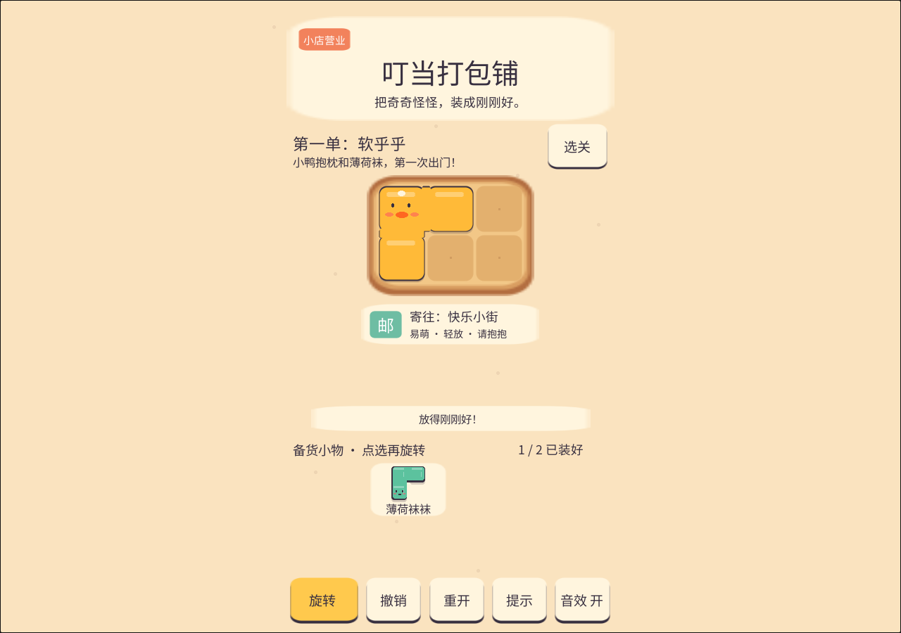
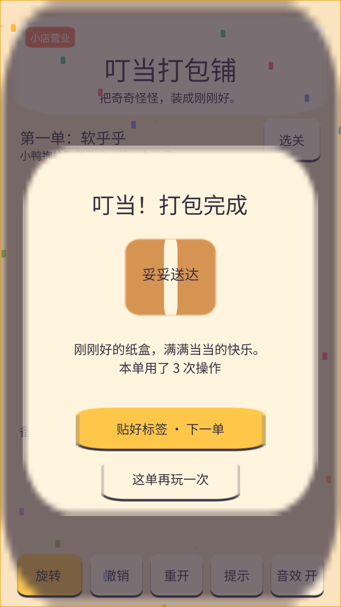
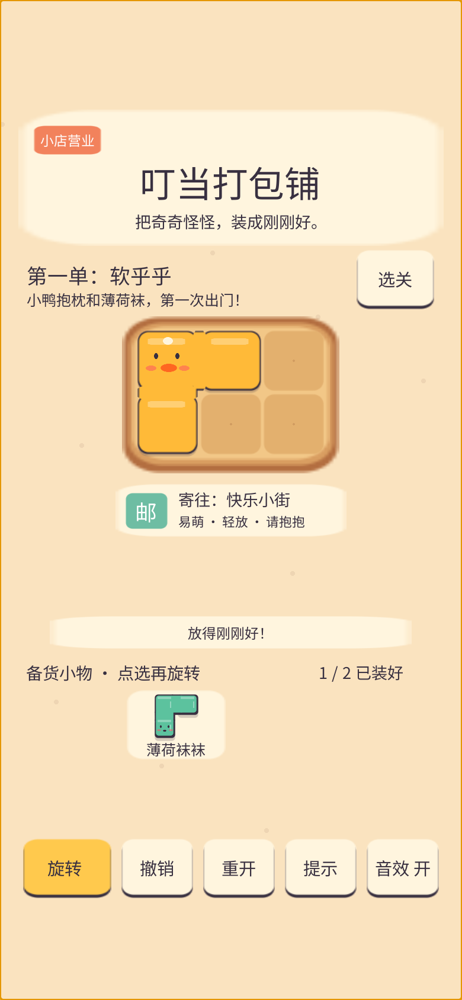

中文 · 轻休闲 · 空间装箱
叮当打包铺把奇奇怪怪，装成刚刚好。
小鸭抱枕、薄荷袜袜、草莓吐司……每一件奇怪小物，都在等待一个刚刚好的纸盒。拖一拖、转一转，把快乐妥妥寄出。
10 个手工关卡鼠标 / 单指触摸720×1280 竖屏基准本地自动保存v1.1.0
工程下载沿用网站管理员授权入口。取消触摸或拖出画布会保留原摆放，旧版进度继续可用。首次试玩需要加载约 28 MB 游戏资源。建议联网加载完成后再开始；进度保存在当前浏览器。

这一单，怎么打包？
挑一件小物鼠标或单指拖到纸盒里，自动吸附到格子。
转出好角度点击小物，再点击旋转；放不下时会保留原位。
叮当，寄出！装好全部小物即可贴签。撤销、重开和参考图随时帮忙。
纸盒里，也有小小成就感


Unity 2022.3.62f3c1 制作。小物、纸盒、界面与音效为原创程序化资源；中文字体为 Noto Sans CJK SC，采用 SIL Open Font License。单局设计目标约 1–3 分钟，不设强制倒计时。支持720×1280、360×640与长屏适配；手机及安全区通过浏览器模拟验证，桌面保留鼠标操作。实际验证范围及证据见验收记录；尚未验证真实 iOS / Android 设备。